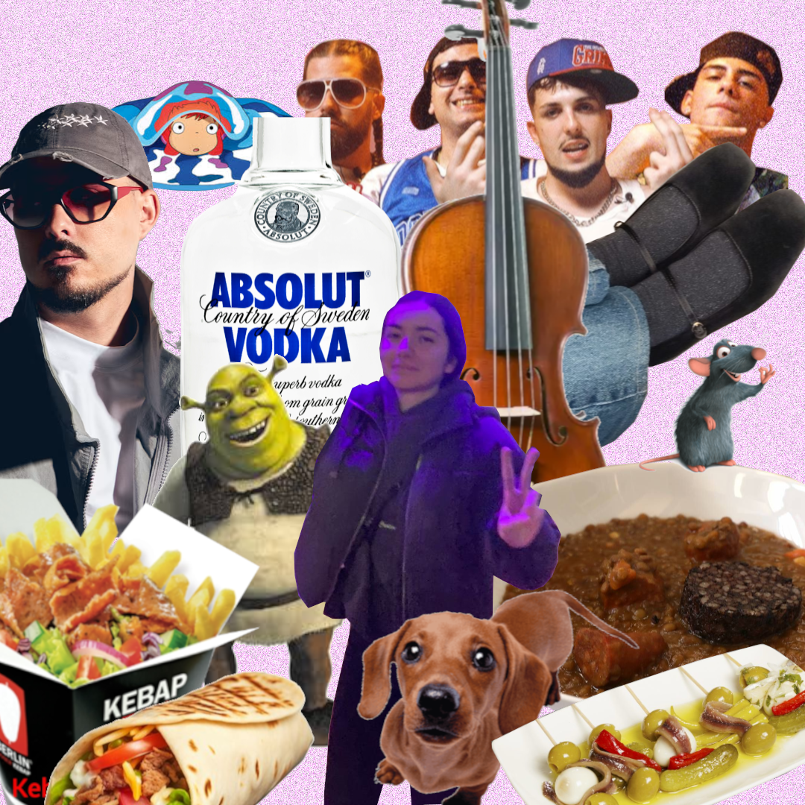

MEDEA TE QUIEROOOOO

113
Razones por las que te quiero
tu sonrisa
tu humor
tu humor negrísimo(nigga)
tus gustos musicales
tu dramatismo
tus ojos
TUS OJOS (merece dos puestos)
te gusta el deporte
te gusta el judo y la natación
te gustan las películas que a mí me gustarían
juegas conmigo a juegos
te interesas por mis gustos
me preguntas que tal cuando tengo cosas importantes
tu inteligencia
te preocupas cuando estoy malo
te preocupas cuando estudio mucho
vas conmigo a excursiones de artes marciales
estuviste toda la presentación de la appEuropa
viniste a Torrevieja y conociste a mis amigos
haces surf y te gusta nadar
tus gustos de comida exóticos
te gustan las oreo con ketchup ? okay
los datiles y las gildas mas manejable eso
gritas MARICÓN en las montañas rusas
dices acho
tu estilo de vestir ropa
lo bien que te quedan ESAS MANOLETINAS
te ries cuando suelto bastadas
nos llamos xoxete y nos damos el lujazo
tu forma de pensar sobre la vida
tu forma de esforzarte y conseguir cosas
tus logros y tu ambición
las fotocomidas con flash
mirarme como una camara de vigilancia en la capea (sin eso aqui no estariamos)
ser penosa en bolos
NO ser la campeona (soy yo obviamente)
escribirme en las prácticas de coche cuando iba el compañero para no aburrirme
eres literalmente un perro salchicha
eres literalmente un pez luna
eres literalmente un manatí
eres literalmente una rata(mona)
tu pelo (no eres calva)
tu pelo semirecogido con coletilla
kebab mixto ya
la sonrisa inversa que pones cuando te enfadas
me enseñaste a tocar algo en piano (casi)
me cuentas todos los cotilleos
escuchas cuando cuento los cotilleos
los abrazos largos
los besos largos
los besos raros
viniste conmigo al gimnasio y te esforzaste
eres muy buena persona
eres la terapeuta de tus amigos
dejaste que vaya a verte en los conciertos aunque te diese verguenza
eres igual de rara que yo y soportas que sea tan raro
celebrabas todos los corrects (BYEBYE MARP 5.4)
me trajiste un paraguas de chocolate
las mañanas que no iba a clase por seguir abrazado contigo
tus caricias
escuchas todas las canciones que te mando aunque sean de myke towers
literal osea hasta escuchaste a DJ RAMON SUCESO
me enseñaste el rap de la oscam (maravilla)
que no te de verguenza tocarme el culo en publico
me regalaste a norbertin
escucharte me calma y me olvido del resto
ser guapisima (aunque creas que no)
por abrir los sobres pokemon aunque no te toque nada
enseñarme compositores y obras que te gustan
jaja 69 ajajjajaj
jugar omori conmigo (tienes que pasartelo 100%)
tu madurez y tu forma de arreglar problemas
tus sticker y emojis nigga de whatsapp
escuchas y no juzgas
como sonries al mirarme
tu forma de hacer el 😜🤘
los tiktoks que me mandas para decir 'eres tu'
como me explicas cosas que no entiendo de tu carrera
tu risa
cuando nos ponemos a hacer el down y te ries
las noches que se nos pasaba la hora y ni cenabamos
cuando vuelvo de clase y encuentro a norbertin en la cama arropado
los paseos que dabamos por el parque del oeste y acababas contandome como te abrias la cabeza
falora
tu olor
cuando te quedas mis camisetas y veo que las llevas en el comedor
como me miras y buscas aunque este la sala llena de gente
saber poner límites y evitar a las personas que te dañan
tu forma de poner la ceja roneanta
las cenas de sushi guarrindongo
las cenas de keba
tu oido izquierdo premium y el derecho tmb
tu forma de apoyarte en mi hombro
tus calcetines exóticos
regalarme unas pegatinas de omori, la sudadera gris y mucho mas
tus mejillas redondas y suaves
no huir despavorida cuando te dije que fui otaku
respetar mi culo porque eso no va a suceder jajajajjas
por enseñarme tus peliculas favoritas y verlas juntos
tus manos
tu familia curiosa
tu forma de mirarme al despertarte
tus bogiriboingboing
por sortar tener UN PEDAZO DE culo (tienes mas que yo)
tu cuerpo
los soniditos que haces al dormir
que te gusten los patos y los animales
dejarme robarte las gomas de pelo
enseñarme a hacer coletas y proximamente trenzas
que te caigan bien mis amigos y familia
tu voz y tu acento
nuestro odio compartido a ciertas etnias
porque el tiempo contigo se me pasa volando
ser la mejor novia que uno puede pedir
por un futuro juntos y por dejarme vivir mi vida junto a ti